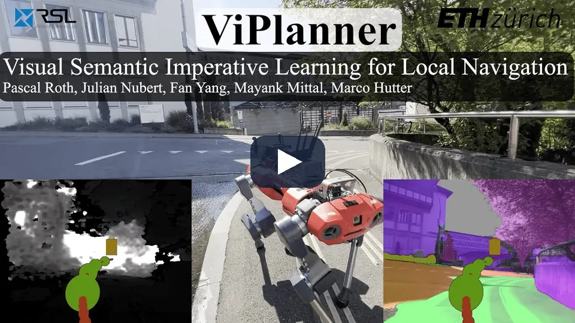
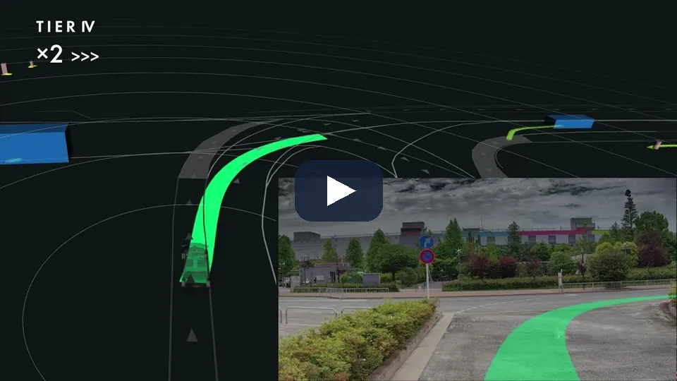
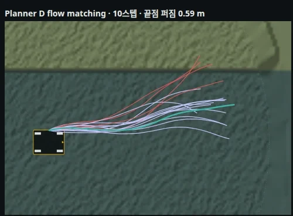
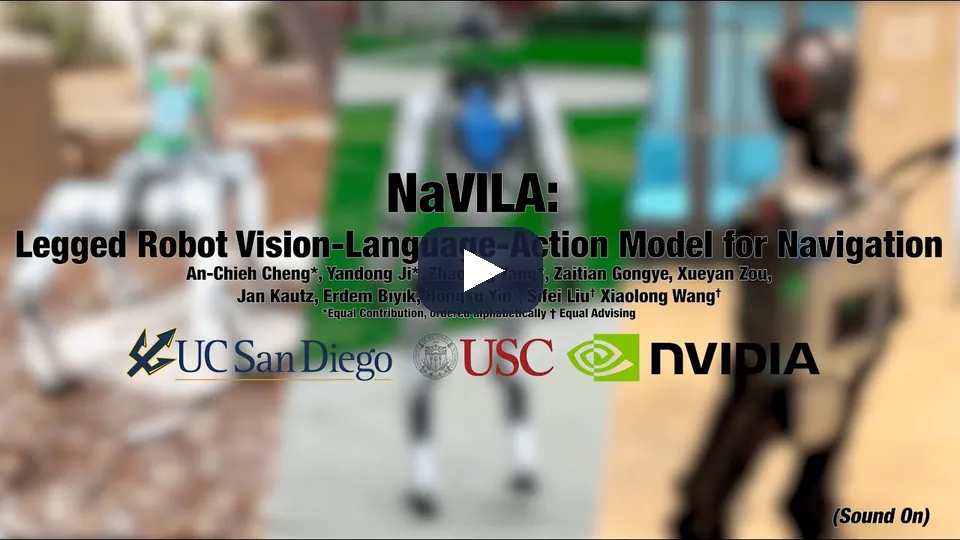
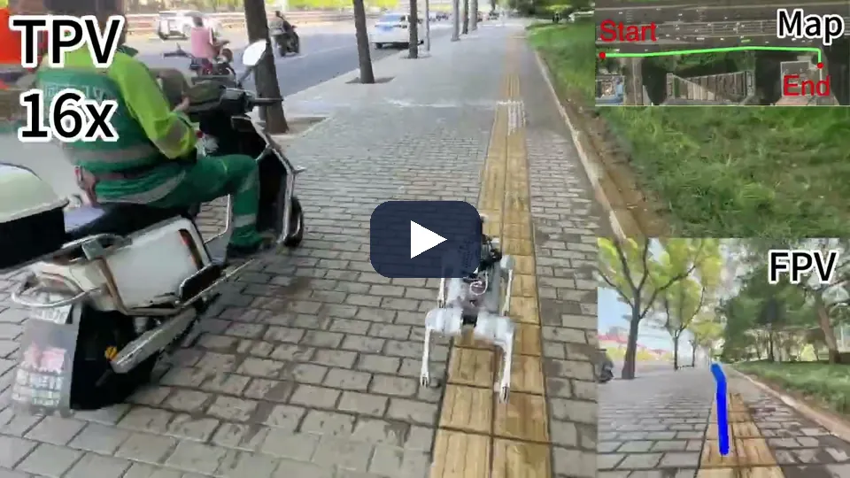
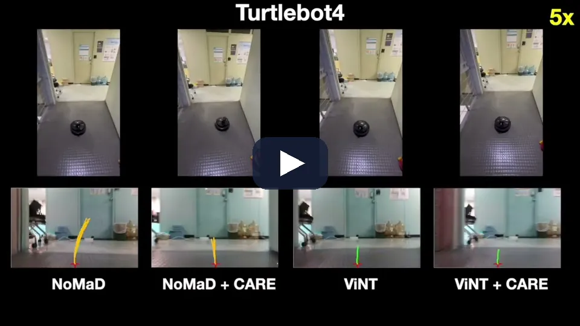
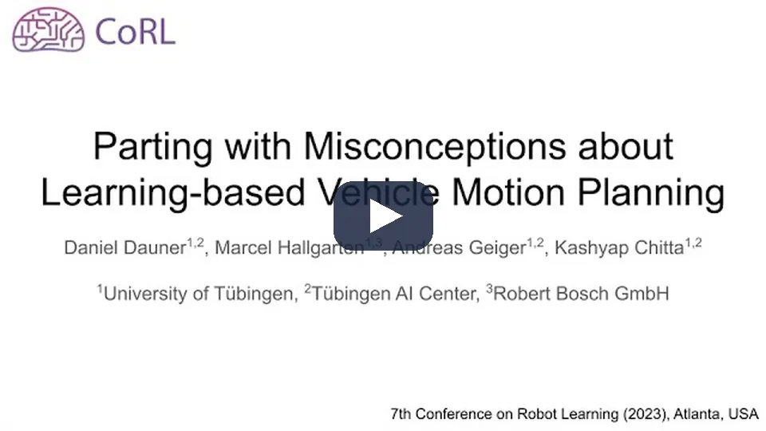
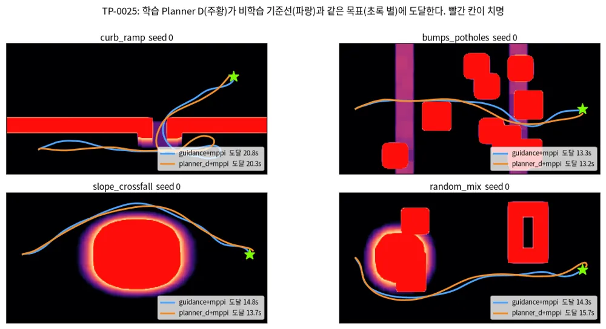

TRAVPLAN · 챕터 발표 · Planner (§B)
학습 Planner는 후보를 내고,
고르는 일은 따로 한다
고전 기준선, 학습 로컬 Planner, 생성형 궤적, VLA, 위험 인지 계획, 그리고 Planner D에서 잰 것
B.1–B.16 연구
B.17 최근 연구 비교
B.15 작업 기록
2026-10
순서
방법 다섯 갈래를 살펴보고 비교한 뒤, 우리가 잰 것으로 끝낸다
0 · Planner의 계약과 고전 기준선
B.1, B.10 · GuidancePlanner(Dijkstra)
1 · 학습 로컬 Planner
B.3, B.4b · iPlanner, NavDP, X-NavDP
2 · 생성형 궤적
B.8 · Diffuser에서 Planner D까지
3 · Foundation·VLA·언어
B.6 · VAMOS, Slow Brain, UrbanVLA
4 · 위험 인지·로컬 내비
B.9 · Feasibility-Guided, DreamFlow
5 · 자율주행 자동차
B.12.1, B.13 · PDM-Closed, 규칙의 자리
6 · 최근 연구 비교 (B.17)
공통점, 차이점, 다음 시도 순서
7 · travplan 작업 기록 (B.15)
폴백, RL 후학습, 레벨 스윕
B.1 · Planner의 계약
Planner는 경로나 4초 궤적만 내고, 제어는 Controller가 맡는다
입력
로봇 상태
TravMap[8,H,W]
목표
→
Planner
GuidancePlanner(Dijkstra)
LearnedPlanner(waypoint 8개)
Planner D(flow matching)
→
PlanResult
path 경로
times 시간 인덱스
→
Controller
MPPI · NMPC · pure pursuit
로컬 회피 후 body twist
고전 경로
Guidance가 Dijkstra로 subgoal과 cost-to-go를 준다
학습 궤적 생성
Planner D가 flow matching으로 후보 16개를 만든다
규칙 점수
TravMap cost, 치명 셀, cost-to-go로 하나를 고른다
travplan: Planner는 "고전 전역 경로 + 학습 로컬 궤적 + 규칙 점수 선택"의 세 층이다.
B.10 · 고전 기준선
학습 Planner의 기준선은 TravMap 위 Dijkstra다
| 연도 | 이름 | 층 | 핵심 |
|---|---|---|---|
| 1959 | Dijkstra | 전역 | 누적 비용이 작은 칸부터 확정 |
| 1968 | A* | 전역 | 남은 비용 추정(heuristic)으로 탐색 순서 |
| 1997 | DWA | 로컬 | 가속 한계 안의 속도 창에서 선택 |
| 2008–10 | Hybrid A* | 전역 | 칸마다 연속 자세, 차량 기구학 |
| 2012–17 | TEB | 로컬 | 시간 간격 궤적의 희소 최적화 |
| 2020, 2024 | Nav2, Smac | 스택 | behavior tree, 비용 인식 A* |
GuidancePlanner 간선 비용(8방향 격자, 치명 셀은 그래프에서 뺀다)
- Dijkstra 한 번으로 모든 칸의 cost-to-go
- 학습 Planner는 4 m 앞 점을 subgoal로 받는다
- 3 seed 벤치마크 guidance+mppi 12/12

travplan: Guidance는 기준선, subgoal 공급원, 폴백을 겸한다.
Dijkstra 1959; Hart·Nilsson·Raphael 1968; Fox·Burgard·Thrun, IEEE RAM 1997; Rösmann 외, RAS 2017; Nav2 arXiv:2003.00368; [1] Smac Planner arXiv:2401.13078
1 · 학습 로컬 Planner · B.2–B.4b, B.7
한 답을 회귀하던 Planner가
후보를 생성하고 고르는 쪽으로 옮겨 갔다
회귀는 빠르지만 갈림길에서 두 답의 평균이 장애물로 들어간다. diffusion 계열은 여러 답을 내고 critic이 고른다.
B.4b · costmap 자기지도
라벨 없이 costmap의 gradient만으로 경로를 배울 수 있다

ESDF 비용을 손실로 쓰는 bilevel 최적화
약 4배 빠르고 SPL 26–87% 향상
의미 클래스 30개의 비용을 더했다
traversability 비용 38.02% 감소
TravMap cost와 σ로 같은 손실
3 seed 벤치마크 learned+mppi 8/12
travplan: 답이 하나라 갈림길에서 약하다. 그래서 Planner D로 옮겼다.
[2] iPlanner, arXiv:2302.11434, RSS 2023 · [3] ViPlanner, arXiv:2310.00982, ICRA 2024 (ETH RSL)
B.4b · costmap 자기지도 · 영상
시뮬레이션만으로 배운 ViPlanner가 취리히 도심에서 지형을 가려 가며 간다

기하만 보면 계단은 벽이고 보도와 도로는 같은 평면이다. 의미 비용이 들어가면 횡단보도와 계단을 다룰 수 있다.
보도와 높이가 같은 잔디밭·흙길은 TravMap 기하 채널로 가를 수 없다. 시각 채널(인식 문서 A.11)이 들어갈 자리다.
[3] ViPlanner, arXiv:2310.00982, ICRA 2024 (ETH RSL) · 영상 3분
B.3 · diffusion 궤적 + critic
NavDP는 diffusion으로 후보를 내고, privileged 정보로 배운 critic이 고른다
- RGB-D 이력으로 궤적 후보를 생성한다
- 장면 3,000개, 시뮬 1,000 km 이상만으로 학습
- critic 라벨은 시뮬 ESDF에서 만든다
- 실물에서 critic은 영상만 보고 점수를 맞힌다
| 평가 | 결과 |
|---|---|
| 시뮬 PointGoal 성공률 | 67.2% (ViPlanner 60.9%) |
| 실물 Turtlebot · Go2 · G1 | 9/10 · 7/10 · 7/10 |
| 학습 비용 | A100 32장, 24시간 |

travplan: critic은 Planner D 규칙 선택기의 대체 후보다.
[4] NavDP, arXiv:2505.08712, ICRA 2026
B.3 · 폐루프 RL 후학습
폐루프 Q로 같은 상태의 후보를 재가중하자 성공률이 61%에서 84%가 됐다
- 같은 상태의 후보 64개, Q를 그룹 안에서 정규화
- 상위 5개만 지수 가중 score matching
- 3초 추종 구간이 RL transition 하나
- 23점 중 9점은 그룹 정규화 덕분
| 보지 않은 장면 40개 | SR % |
|---|---|
| iPlanner · ViPlanner | 33.84 · 43.87 |
| NavDP | 61.20 |
| X-NavDP | 84.28 |
| ablation: DPPO · 모방만 | 33.98 · 53.50 |

travplan: TP-0066의 개루프 채점을 폐루프 Q로 바꾼다.
[5] X-NavDP, arXiv:2607.28560, 2026-07 프리프린트 · [6] Beyond Imitation, arXiv:2603.12868 · [7] ReinFlow, arXiv:2505.22094, NeurIPS 2025
B.3 · 폐루프 RL 후학습 · 그림
폐루프 후학습 뒤에는 되돌아 나오기, 우회, 더 안전한 선택이 나타난다
X-NavDP(왼쪽)는 막다른 곳에 들어갔다가 물러나 다른 길을 찾는다. NavDP(오른쪽)는 같은 장면에서 실패한다.
긴 장애물을 돌아가는 궤적(detour)이 생긴다. 개루프 채점만으로는 몇 초 뒤의 결과를 보상하지 못한다.
장애물 사이에서 더 안전한 궤적을 고른다. 폐루프 Q가 후보를 재가중한 효과다.

[5] X-NavDP, arXiv:2607.28560, 2026-07 프리프린트
2 · 생성형 궤적 · B.8.0–B.8.3
궤적 전체를 생성 모델에서 샘플하고,
스텝 수를 1–2개로 줄여 왔다
공통점은 셋이다. 궤적 전체를 한 번에 만들고, 여러 모드를 표현하고, 비용이나 목표로 생성을 유도한다.
B.8.0 · 계보
Diffuser에서 GoalFlow까지 바뀐 것은 조건, 시작점, 스텝 수다
| 연도 | 이름 | 바꾼 것 |
|---|---|---|
| 2022 | Diffuser | 궤적 전체를 diffusion으로, 보상 gradient guidance |
| 2023 | Diffusion Policy | 관측 조건부 행동 시퀀스, receding horizon |
| 2023 | MPD | diffusion prior × 비용 likelihood 사후 샘플링 |
| 2024 | π0 | VLM에 flow matching 행동 전문가 |
| 2024 | DiffusionDrive | anchor에서 시작, 2스텝 |
| 2025 | Diffusion Planner | 예측과 계획을 함께 생성 |
| 2025 | GoalFlow | 목표점 먼저, flow matching 1스텝 |

Planner D는 GoalFlow와 구조가 같다
목표점은 subgoal, 점수기는 TravMap 규칙
| 회귀 계열 (LearnedPlanner) | 생성형 궤적 (Planner D) | |
|---|---|---|
| 답의 수 | 대개 하나. 갈림길에서 두 답의 평균 | 여러 개를 샘플링해 고른다 |
| 시간 | waypoint 8개, 시간 없음 | 4초 × 10 Hz, PlanResult.times |
[8] Diffuser, arXiv:2205.09991, ICML 2022 · [9] Diffusion Policy, arXiv:2303.04137, RSS 2023 · [10] GoalFlow, arXiv:2503.05689, CVPR 2025
B.8.1 · Diffusion Planner
Diffusion Planner는 네 성질을 한 생성기에 담았다
| 성질 | Diffusion Planner | travplan Planner D |
|---|---|---|
| 시간이 붙은 궤적 | 8초 × 10 Hz = 80스텝, 20 Hz 재계획 | 4초 × 10 Hz, PlanResult.times |
| 주변 에이전트 | 이웃 10대의 미래를 자기 궤적과 한 텐서로 denoise | 등속 예측을 Controller RiskCost가 채점 |
| 목적지와의 연결 | 차선 경로를 조건으로 8초만 생성 | Guidance subgoal을 조건으로 받음 |
| 기구학 | 보장 안 함. 출력을 LQR 추종기에 넘김 | SwerveModel로 rollout해 만들 때부터 실행 가능 |
| 실행 중 제약 | 재학습 없는 classifier guidance | planner_dg가 TravMap 비용 gradient로 |
nuPlan Test14-hard
75.99 (PDM-Closed 65.08)
후처리를 붙이면 78.87
배달 차량 실주행 200시간
폭 1.03 m, 자전거도로에서 92.08
travplan 도메인에 가장 가깝다

[11] Zheng 외, Diffusion-Based Planning for Autonomous Driving with Flexible Guidance, arXiv:2501.15564, ICLR 2025
B.8.1 · Diffusion Planner · 영상
문서 B.8의 출발점은 TIER IV가 Autoware에 넣은 이 Diffusion Planner 영상이다

예측과 계획을 학습 모듈이 맡고, 스택의 나머지 모듈은 그대로다. 복잡한 상황에서 더 자연스러운 주행을 내세운다.
이 Planner의 네 성질(시간이 붙은 궤적, 주변 에이전트, receding horizon, 실행 가능한 출력)을 Planner D로 가져왔다.
TIER IV, Autoware Diffusion Planner(autoware_universe PR #10957, 2025-07 머지) · [11] 원 논문 Zheng 외, arXiv:2501.15564, ICLR 2025 · 영상 1분 38초
B.8.2 · 후속 연구
후속 연구는 스텝 수, 안전, 실행 가능성을 생성 과정 안팎에서 보강한다
| 논문 | 핵심 | 보고한 수치 |
|---|---|---|
| Flow Planner (NeurIPS 2025) | 궤적을 잘게 토큰화, 시공간 융합 + CFG | nuPlan Val14 90.43(refinement 없이), MIT |
| DiffusionDrive (CVPR 2025) | 모드 anchor 20개에서 truncated diffusion 2스텝 | RTX 4090 45 FPS |
| MISTY (2026-04) | 반복 denoise 대신 단일 스텝 | 10.1 ms, Test14-hard 80.32 |
| PC-Diffuser (2026-03) | denoise 루프 안 capsule CBF, 단계마다 LQR rollout | — |
| JPPD (2026-06) | 보도 배달로봇·보행자 예측·계획 공동 생성 | CPU 32 ms, 충돌률 0.9%(ORCA 11.2%) |
| GRACE (2026-07) | guidance 평균을 MPPI 한 번으로 추정 | 미분 불가능한 충돌 비용도 사용 |
적분기
DPM-Solver++ 10스텝
시작점 당기기
anchor에서 2스텝
증류
단일 스텝, 다양성을 잃는다
travplan: JPPD가 도메인과 가장 가깝다. Flow Planner는 MIT다.
[12] Flow Planner arXiv:2510.11083 · [13] DiffusionDrive arXiv:2411.15139 · [14] MISTY arXiv:2604.21489 · PC-Diffuser arXiv:2603.10330 · [15] JPPD arXiv:2606.20686 · [16] GRACE arXiv:2607.21661
B.8.2 · JPPD · 그림
JPPD는 보행자 예측을 고정하지 않고 로봇 계획과 함께 denoise한다
예측 모듈이 낸 보행자 궤적(빨강)을 고정한 채 로봇 후보(파랑)를 채점한다. 보행자가 로봇에 반응하지 않는 한 방향 조건이다.
denoising 단계마다 로봇 계획과 보행자 예측이 서로 영향을 주며 한 상태 공간에서 함께 샘플링된다. 안전 guidance는 척력(떨어지기)과 인력(목표)이다.
Diffusion Planner의 "이웃과 함께 생성"을 보도 배달로봇에 옮긴 예다. Planner D는 등속 예측을 Controller RiskCost가 채점하는 쪽에 있다.

[15] JPPD, arXiv:2606.20686, 2026-06 · Isaac Sim + ROS + 메카넘 실물, CPU 32 ms, 충돌률 0.9%(ORCA 11.2%)
B.8.3 · travplan Planner D
Planner D는 제어 변화율을 생성해 스워브 모델로 rollout한다
조건
TravMap 크롭
route subgoal, 현재 속도
→
생성
flow matching
변화율 a[40,3] × K=16
→
rollout
적분 후
SwerveModel.rollout
→
선택
cost × 6 + 치명 10³
+ cost-to-go × 4
→
출력
path[41,3]
times[41], 4초
고른 이유
속도·가속 한계가 이미 스워브 모델에 있다
LQR·QP 후처리 없이 실행 가능하다
갈림길은 후보 16개 중에서 고른다
학습 데이터와 공백
지형 256개, Guidance + MPPI 시연 32,768개
교사가 상태마다 답 하나만 준다

travplan: 다중 모드 교사(MPOT)가 빈자리다. 아직 착수하지 않았다.
planners/learned/ · 선택기 가중치는 B.15.1 · MPOT arXiv:2309.15970, NeurIPS 2023 (B.10.1)
3 · Foundation·VLA·언어 · B.6–B.6d
VLA는 Planner를 대체하지 않고,
그 위에서 목표를 정하는 층이다
느린 모델은 위층에 두고, 기하와 시간은 Planner와 Controller가 맡는다.
B.6b · VAMOS
의미 계획과 몸체 판단을 두 모델로 나누자 실제 코스에서 90%가 됐다

- 위층: VLM이 영상 위 경로 후보를 낸다
- 아래층: 로봇별 통과 확률(8방향)
- 판단을 켜면 Hound 60%에서 90%
| 코스 6곳 × 5회 | 성공률 |
|---|---|
| VAMOS | 90% |
| ViPlanner · 모듈식 스택 | 67% · 53% |
| NoMaD · NaVILA | 27% · 10% |
[17] VAMOS, arXiv:2510.20818, 2025-10 · [18] Can Vision Foundation Models Navigate?, arXiv:2603.25937 · [19] NaVILA, arXiv:2412.04453, RSS 2025
B.6 · NaVILA · 영상
VAMOS 코스에서 10 %였던 NaVILA도 제 과제(지시 25개)에서는 88 %다. 과제가 바뀌면 성적이 바뀐다

VLA는 단일 시점 영상과 지시에서 언어로 된 중간 행동을 내고, 영상 기반 보행 RL 정책이 실행한다. Go2·H1·Booster T1에서 실제 지시 25개 성공률 88%다.
앞 장 VAMOS 코스에서 10%였던 단일 모델이 이것이다. travplan은 VLA를 위층의 목표 선택에만 둔다.
[19] NaVILA, arXiv:2412.04453, RSS 2025 (UC San Diego·USC·NVIDIA) · 영상 4분 29초
B.6d · Slow Brain, Fast Planner
늦게 오는 VLM 답은 그대로 따르지 말고 Planner 점수에 섞는다
- 앵커 Planner가 후보 64개를 5 Hz로 낸다
- VLM 왕복 지연은 중앙값 2.7초
- 늦은 답은 현재 좌표로 옮겨 가중한다
- 5초가 넘으면 보수적 폴백
| 4륜 배달로봇, 보도 5경로 | 100 m당 개입 |
|---|---|
| Planner만 | 3.49 |
| VLM 답을 그대로 따르기 | 8.15 |
| Score Fusion | 1.31 |
| Probability Fusion | 0.87 |

travplan: planner_df와 같은 구조다. 판정자가 의미를 본다.
[21] Slow Brain, Fast Planner, arXiv:2606.20458, 2026-06 (Amazon FAR·UCLA)
B.6b, B.6d · 보도 로봇의 시연
보도 로봇 연구는 시연의 질을 고쳐 실물의 분포 이동을 다룬다
경로에 잡음을 넣는다
waypoint를 흔들어 다시 샘플링하는 HTL
실물 C자 보도 완주 42% → 100%
시뮬은 93% → 89%로 반대
배달 로봇 fleet 로그로 배운다
원격조종 궤적 3,040개, 약 50시간
이탈 상태를 합성해 교정 행동 확장
horizon마다 앵커를 둔다
잔차만 RL로 배운다
영상 약 100시간 모방 뒤 PPO
0 초기화 잔차 attention만 학습
실물 0.51(CityWalker 0.28)

[20] UrbanVLA, arXiv:2510.23576 · [22] MIMIC, arXiv:2603.22527 · [23] S2E, arXiv:2507.22028 (학회 표기는 저자 저장소 기준)
B.6d · UrbanVLA · 영상
UrbanVLA는 길 안내 앱의 경로점을 영상과 맞춰 보며 도시 보도를 수백 미터 간다

입력은 앞 40 m 경로점 20개, "30 m 뒤 우회전" 같은 안내문, 카메라 넷의 영상이다. Go2에서 원격 RTX 4090으로 2 Hz로 돌고, 궤적은 기존 로컬 Planner가 실행한다.
배달로봇의 전역 경로도 소비자 지도에서 온다. HTL처럼 route 조건에 잡음을 넣는 증강이 가져올 것 4번이다.
[20] UrbanVLA, arXiv:2510.23576, 2025-10 (Peking University·Galbot 등) · 영상 2분 43초
4 · 위험 인지·로컬 내비 · B.9
위험을 칸 cost 하나에 두지 않고
방향, Controller, 차체 자세로 옮긴다
같은 땅도 지나가는 방향에 따라, 따라가는 Controller에 따라 위험이 다르다.
B.9 · Feasibility-Guided Planning
Controller가 실제로 따라간 정도를 배워 Dijkstra 간선 비용으로 쓴다
- 지형별 보행 정책마다 Feasibility-Net
- 입력: 높이 지도 조각, 속도 명령
- 라벨: rollout의 속도 추종 보상
- 8방향 텐서를 Dijkstra 간선 비용으로
- 혼합 지형: 시뮬 98.60%, 실물 A1 70%
- 계단 정책이 좋아지면 경로 26.75 → 9.73 m

travplan: TP-0151을 다시 열면 이 방식이 첫 후보다.
[26] Feasibility-Guided Planning, arXiv:2602.07932, 2026-02, ICRA 2026(arXiv 주석)
B.9 · 위험의 다른 자리
방향, 센서 밖, 차체 자세, 부착 안전 층이 칸 cost를 보완한다
간선이 경사면의 종·횡 방향을 담는다
같은 땅도 지나가는 방향에 따라 값이 다르다
Commons Clause로 판매 금지
센서 밖 지형을 flow matching으로 상상
시뮬 Maze(Hard) 83.1%, Hallway 89.8%
경사로가 센서 밖인 curb_ramp에 해당
가림 분산을 차체 자세까지 전파한다
Gazebo 실패율 18.9%, 항을 빼면 34.4%
칸 σ와의 비교는 없다
정책 궤적을 척력장으로 밀어낸다
후보를 버리지 않고 밀어서 고친다
재학습 없이 붙이는 안전 층
travplan: 척력은 생성이 끝난 뒤 한 번만 적용한다(생성 중 guidance는 3/30).
[24] TRG-planner arXiv:2501.01806 · [25] DreamFlow arXiv:2603.02976 · [28] Occlusion-Aware Stability-Oriented Planning arXiv:2609.39105 · [27] CARE arXiv:2506.03834
B.9 · CARE · 영상
CARE는 사전학습 내비 정책을 다시 학습하지 않고 척력 층만 붙여 충돌을 줄인다

RGB에서 추정한 깊이로 척력 벡터를 계산해 정책이 낸 로컬 궤적을 장애물에서 밀어낸다. 여러 실물 로봇의 목표 도달에서 충돌을 최대 100% 줄였고, 탐색에서 충돌 없이 간 거리가 최대 10.7배 늘었다(초록 기준).
후보를 버리지 않고 밀어서 고친다. 지금 planner_df는 치명 비율이 높으면 Guidance로 바꾼다. 미는 힘은 생성 중이 아니라 생성 뒤 한 번만 건다.
[27] CARE, arXiv:2506.03834, CoRL 2025 (Kim·Sycara·Nam 등, 서강대) · 영상 2분 46초
5 · 자율주행 자동차 · B.11–B.13
자동차 스택도 "후보 생성, 검증, 선택"으로 모였다
E2E 주행의 결론은 하나를 회귀하지 말고, 후보를 만들어 규칙과 학습 점수로 고르라는 것이다.
B.12.1 · PDM-Closed
규칙 후보 15개를 시뮬레이션해 고른 PDM-Closed가 학습 Planner를 이겼다

- IDM 속도 5 × 횡 오프셋 3 = 후보 15개
- LQR + 자전거 모델로 4초 시뮬레이션
- 규칙·진행·편안함 점수로 하나를 고른다
- nuPlan 2023 계획 챌린지 우승
travplan: 규칙 기반 후보 생성기를 기준선으로 두면 학습 생성기의 기여를 잴 수 있다.
[29] PDM-Closed, arXiv:2306.07962, CoRL 2023 (Tübingen), tuplan_garage Apache-2.0
B.12.1 · PDM-Closed · 영상
개루프 점수와 폐루프 주행이 어긋나는 것을 1분짜리 spotlight로 본다

사람 궤적을 흉내 내던 학습 Planner가 폐루프에서 자기 오차를 키우는가. IDM 후보 15개를 4초 시뮬레이션하고 규칙·진행·편안함 점수로 고르는 PDM-Closed의 흐름이다.
Guidance 경로 + 규칙 속도·오프셋 후보 + 같은 점수기를 비학습 기준선으로 두면 학습 생성기의 기여를 잴 수 있다.
[29] Dauner 외, PDM-Closed, arXiv:2306.07962, CoRL 2023 (Tübingen) · 영상 57초
B.12.1, B.13 · 규칙의 자리
학습 Planner는 규칙을 없앤 것이 아니라 규칙의 자리를 옮겼다

PlanT · 2022
규칙은 교사
→
PlanTF · 2024
지름길 막는 설계
→
PLUTO · 2024
후보 채점기
→
CaRL · 2025
보상·종료 조건
travplan: 교사는 Guidance + MPPI, 채점은 규칙 선택기다.
[30] PlanT arXiv:2210.14222, CoRL 2022 · PlanTF arXiv:2309.10443, ICRA 2024 · PLUTO arXiv:2404.14327 · CaRL arXiv:2504.17838, CoRL 2025
6 · 최근 연구 비교 · B.17 (2025–2026)
생성 Planner가 후보를 내고,
갈리는 곳은 "누가 고르나"다
학습한 critic, 폐루프 RL, 느린 VLM, 로봇별 실행 가능성 모델, 비학습 안전 층이 그 자리에 들어간다.
B.17 · 비교표 1/2 · 학습 로컬 Planner
영상 입력 계열은 모방으로 시작해 RL로 fine-tuning한다
| 이름 (연) | 입력 | 방법의 핵심 | 학습 신호 | 로봇·실험 |
|---|---|---|---|---|
| NavDP (2025) | RGB-D | diffusion 후보 + privileged critic | 시뮬 시연 모방 | Turtlebot·Go2·G1 |
| X-NavDP (2026-07) | RGB-D | 그룹 안 Q 재가중 | 폐루프 RL, 3초 transition | 시뮬 SR 61→84% |
| Beyond Imitation (2026-03) | RGB-D | DiT 뒤쪽 층만 조정 | 에피소드 GRPO | Go2 20회 10→14 |
| ReinFlow (2025-05) | 상태·영상 | flow에 학습 잡음 | 정확한 likelihood PG | 시뮬 보행·조작 |
| LoGoPlanner (2025-12) | RGB-D 영상 | 기하 백본, 위치 추정 내장 | 시뮬 시연 모방 | TurtleBot·Go2·G1 |
| S2E (2025-07) | RGB + 목표점 | 앵커 GMM + 0 초기화 잔차 | 영상 모방 뒤 PPO | 바퀴 로봇·Go2 |
| MIMIC (2026-03) | 어안 + GPS | 다중 horizon 앵커, 교정 확장 | 원격조종 로그 모방 | 배달로봇 400 m |
| LogoNav (2025-05) | 영상 + 목표 | 행동 재라벨링(MBRA) | 재라벨 데이터 모방 | 6개 도시, 300 m+ |
출발점이 같은 넷
NavDP에서 출발해 RL 신호만 다르다
실물 로그를 고치는 둘
MIMIC은 이탈 합성, LogoNav는 재라벨
공통 입력
영상이라 연석 높이를 명시하지 않는다
B.17 표에서 줄였다. 코드 공개: NavDP·X-NavDP·LoGoPlanner(NavDP 저장소), S2E 공개, 나머지 미확인
B.17 · 비교표 2/2 · 선택·위험·안전
높이 지도 계열은 비용과 안전 층에서 몸체를 판단한다
| 이름 (연) | 입력 | 방법의 핵심 | 학습 신호 | 로봇·실험 |
|---|---|---|---|---|
| Slow Brain (2026-06) | RGB + 목표 | 앵커 후보 + 지연 VLM 융합 | 학습 Planner + VLM | 4륜 배달로봇 5경로 |
| UrbanVLA (2025-10) | 카메라 4대 + waypoint | waypoint를 영상과 정렬 | 지도 학습 뒤 IQL | Go2 500 m+ |
| VAMOS (2025-10) | RGB + 문장, 높이 지도 | VLM 후보 + affordance | 모방 + 성공 라벨 | Spot·Hound 90% |
| JPPD (2026-06) | 상태·보행자·지도 | 공동 flow + 안전 포텐셜 | 모방 + guidance | 메카넘 실물 |
| DreamFlow (2026-03) | 높이 지도 latent | 센서 밖 지형 상상 | PPO 내비 정책 | Go2 실물 |
| Feasibility-Guided (2026-02) | 높이 지도 + 속도 | 8방향 실행 가능성 → Dijkstra | 추종 보상 회귀 | A1 혼합 지형 70% |
| Occlusion-Aware (2026-09) | LiDAR·깊이 | 피팅 분산 → 자세, CEM | 비학습 최적화 | Husky·Jackal 6곳 |
| CARE (2025-06) | RGB → 깊이 | 척력장으로 궤적 밀기 | 비학습 부착 층 | 여러 실물 로봇 |
고르는 쪽이 느리다
VLM은 1–2 Hz, 위층에 둔다
몸체 판단은 8방향
VAMOS와 Feasibility가 같은 모양
비학습 층
Occlusion-Aware, CARE는 밖에 붙는다
B.17 표에서 줄였다. 학회 표기 중 일부(UrbanVLA, S2E)는 저자 저장소, Feasibility-Guided는 arXiv 주석 기준
B.17 · 공통점
다섯 가지 공통점은 travplan Planner D의 구조와 거의 겹친다
1 · 후보를 여럿 내고 따로 고른다
critic, VLM, affordance, 규칙이 고른다
Planner D도 후보 16개 + 규칙 선택기
2 · 모방으로 시작해 RL로 fine-tuning한다
X-NavDP, Beyond Imitation, S2E, UrbanVLA
시연은 분포를, RL은 회복과 우회를 준다
3 · 시연의 질을 고친다
이탈 합성, 재라벨링, 경로 잡음
셋 다 실물 로그의 분포 이동을 다룬다
4 · 앵커나 모드로 다양성을 지킨다
S2E, Slow Brain(64개), MIMIC
diffusion 계열은 샘플 수로 같은 일을 한다
5 · 추종은 별도 Controller가 한다
X-NavDP는 MPC, Slow Brain은 pure pursuit, Occlusion-Aware는 π-MPPI
Planner가 제어를 내지 않는 travplan 구조와 같다
B.17 · 차이점
갈리는 축은 표현, RL 신호, 불확실성, 실시간성, 몸체 판단의 자리다
영상 대 높이 지도
영상은 데이터가 싸다
지도는 기하를 검사할 수 있다
에피소드, Q, 개루프
Q는 critic을 따로 배운다
개루프는 몇 초 뒤를 못 본다
자세, 센서 밖, 분포 밖
NavDP 계열은 다루지 않는다
칸 cost와 직접 비교한 연구는 없다
5 Hz, 2 Hz, 2–3초
학습 Planner, VLA, 클라우드 VLM
느릴수록 위층에 둔다
입력 안 대 밖
밖에 두면 그 층만 다시 맞춘다
VAMOS, Feasibility, CARE
높이 지도 + 개루프
TravMap 입력, TP-0066 채점
가장 싼 신호에 있다
B.17 · travplan에 주는 의미
RL 신호와 잔차 구조는 가져오고, 영상 입력 VLA는 가져오지 않는다
1 · 폐루프 RL 신호(Q critic)
2 · 0 초기화 잔차 학습 구조
3 · Controller 실행 가능성 간선 비용
4 · route 경로 잡음 증강
영상 입력 VLA를 Planner로 쓰기
위치 추정을 내장한 기하 백본
이유: TravMap이 명시적이어야 한다
치명 셀 검사, Guidance 폴백
잡음 바닥 위의 짝 비교
travplan: Q critic은 치명 결과와 보행자 충돌도 함께 본다.
B.17 · 다시 열 때의 순서
Planner 트랙을 다시 열면 첫 시도는 Q critic RL 후학습이다
폐루프 Q로 후보 가중
판정: curb_ramp L3 단독 26/30을 짝 비교로 넘나
위험: 후보 16개의 Q 과대평가
0 초기화 잔차만 RL로
1번과 함께 쓴다
레벨 0 스모크는 학습 뒤에 의미가 있다
실행 가능성 간선 비용
명령 속도별 추종 오차로 8방향을 배운다
TP-0151을 다시 열 경우에만
route 경로 잡음 증강
어긋난 경로 시나리오로 잰다
Isaac 폐루프(P1) 전에 한다
travplan: 지금은 사용자 결정 1(B)대로 L1 인식과 보행자가 먼저다.
7 · travplan 작업 기록 · B.15
Planner D는 레벨 0에서 기준선과 같고,
좁은 경사로는 학습만으로 넘지 못했다
폴백과 RL 후학습을 더하면 curb_ramp 레벨 3 30/30이다. 학습 쪽 네 시도는 RL 1단계를 넘지 못했다.
B.8.3 · TP-0025
1차 8/12의 원인은 Planner가 아니라 Controller 추종 방식이었다
| 스택 (4 시나리오 × 3 seed) | 성공 | 계획 |
|---|---|---|
| guidance+mppi | 12/12 | — |
| learned+mppi | 8/12 | 0.5 ms |
| planner_d+mppi | 12/12 | 3.4 ms |
| planner_d+tracker | 6/12 | 3.4 ms |
| (이전) planner_d+mppi | 8/12 | 3 ms |
원인을 좁힌 과정
DAgger로도 bumps는 0/24 그대로
요철 구간 비용 0.7–0.9, 틈이 없다
시간 참조에서 멈춤과 건넘의 비용이 비슷
수정
시간 모드에 horizon 끝 진행 항을 더했다
ReferenceCost, w_progress
travplan: Planner를 고치기 전에 Controller 추종부터 본다.
results/tp0025_v2/bench.log · docs/ARCHITECTURE.md §4
B.8.3 · TP-0025 · 그림
네 시나리오에서 Planner D와 Guidance 기준선이 치명 칸을 피해 거의 같은 시각에 닿는다
주황이 planner_d+mppi, 파랑이 guidance+mppi다. 빨간 칸이 치명, 초록 별이 목표이고 범례의 시각이 도달 시각이다.
curb_ramp에서는 두 스택이 연석의 같은 틈으로 모인다. 다른 세 지형에서는 두 궤적이 군데군데 갈라지지만 치명 칸을 피해 같은 목표에 닿는다.
앞 장 표 12/12 가운데 seed 0 네 판이 이 그림이다. 이전 8/12는 Planner가 아니라 MPPI 시간 참조에 진행 항이 없어 생긴 멈춤이었다.

results/tp0025_v2/bench.log · docs/ARCHITECTURE.md §4
B.15.1 · TP-0137
1스텝 후보의 퍼짐은 모드의 다양성이 아니라 두 번 적분된 잡음이다

| 스텝 | flow 퍼짐 | diffusion 퍼짐 |
|---|---|---|
| 1 | 0.996 m | 0.996 m |
| 4 | 0.238 m | 0.220 m |
| 20 | 0.554 m | 0.564 m |
- JS 추론이 파이썬과 7×10⁻⁶ 안에서 같다
- 두 샘플러 모두 12/12(4 지형 × 3 seed)
- 1스텝은 평균으로 83%만 무너진다
- 남은 잡음이 두 번 적분돼 끝점이 약 1 m 퍼진다
B.15.2 · TP-0078
Guidance 폴백이 curb_ramp 레벨 3을 20/30에서 29/30으로 올렸다

잡음 바닥부터
재실행만으로 8 · 6 · 6/10
seed 10 × 오프셋 3 짝 비교
규칙
치명 샘플 90%가 3번 이어지면
2 s 동안 Guidance 경로를 후보로
결과
짝 비교 1 : 10, p = 0.012
Guidance도 29/30
travplan: 개선은 Guidance의 기여다. 계획의 51%를 Guidance가 이긴다.
B.15.3 · TP-0066
폐루프 RL 후학습 12분으로 단독 26/30, 폴백과 함께 30/30이 됐다
| curb_ramp L3, 30 에피소드 | 도달 | 짝 비교 | 폴백 비율 |
|---|---|---|---|
| DAgger 단독 | 20/30 | — | — |
| RL 단독 | 26/30 | 1 : 7, p = 0.070 | — |
| DAgger + 폴백 | 29/30 | 1 : 10, p = 0.012 | 51% |
| RL + 폴백 | 30/30 | 0 : 10, p = 0.002 | 42% |
| guidance+mppi | 29/30 | 1 : 10, p = 0.012 | — |

- 라운드마다 지형 64개 폐루프, 후보 16개를 GT 지도로 채점
- GRPO식 advantage로 AWR 가중 flow matching, 모방 λ = 0.5
- 단독 26/30은 판정 기준 27/30에 못 미친다
- RL + 폴백 도달 28.9 s, Guidance 28.0 s와 같다
짝 비교는 DAgger 단독 대비. 체크포인트 planner_d_L0123_rl.pt, 릴리스 ckpt-2026-10-03
B.15.4 · TP-0039 · TP-0074
레벨 0–3 스윕에서 급격한 붕괴는 없고, 실패는 모두 시간 초과다

| 합 (레벨 0 · 1 · 2 · 3) | 40 중 |
|---|---|
| guidance+mppi | 40 · 39 · 38 · 37 |
| planner_d+mppi (DAgger) | 40 · 39 · 38 · 36 |
| planner_df+mppi (RL + 폴백) | 39 · 40 · 38 · 39 |
- 치명 샘플 비율: 실패 0.75–0.99
- 성공은 0.10–0.57, 폴백 트리거의 근거
- random_mix s3 L2·L3는 세 스택 모두 멈춤
B.15.5–B.15.6 · TP-0138 · TP-0143
학습 쪽 네 시도는 모두 RL 1단계 26/30을 넘지 못했다
| 시도 | 단독 | + 폴백 | 폴백 비율 |
|---|---|---|---|
| RL 1단계 (TP-0066) | 26/30 | 30/30 | 42% |
| RL 2단계: curb_ramp L3만 | 26/30 | 28/30 | 48% |
| RL 재시도: 모든 지형 L2–3 | 26/30 | 27/30 | 46% |
| 리셋 DAgger, 멈춘 채 | 23/30 | 29/30 | 45% |
| 리셋 DAgger, 움직이며 | 23/30 | 28/30 | 43% |
| 진단: 샘플 64개 | 24/30 | — | — |
| 진단: cost guidance 샘플링 | 3/30 | — | — |
보상의 구멍 (TP-0138)
4 s 개루프 후보를 한 번 채점한다
몇 초짜리 재탐색을 보상하지 못한다
해석이다
남은 가설: 구조 (TP-0143)
관측 ±3.2 m, subgoal 3 m, horizon 4 s
실패 때 경사로는 관측 가장자리 밖
travplan: 데이터와 샘플 수는 병목이 아니다. 여기서 멈췄다.
B.15.5–B.15.6 · TP-0138 · TP-0143 · 그림
처방을 바꿔도 단독 도달은 RL 1단계 26/30을 넘지 못하고, 폴백 의존은 줄지 않는다


회색이 단독, 색 막대가 폴백을 켠 값이다. 점선 27/30이 판정 기준이고, 단독 막대는 어느 처방에서도 그 선을 넘지 못한다.
폴백을 켠 성적은 27–30/30으로 비슷하지만, 폴백이 이긴 계획 비율이 42%에서 48%로 오르고 보행자 여유가 0.18 m에서 0.11 m로 준다. 학습 샘플이 나아지지 않았다는 뜻이다.
TP-0138 · TP-0143 · docs/research-planner.md B.15.5–B.15.6
정리
구조는 이미 맞다. 다음에 바꿀 것은 RL 신호와 교사의 다양성이다
후보를 내고 따로 고른다
학습 Planner, 생성형, 자동차, VLA
모두 이 구조로 수렴했다
Planner D + 폴백
레벨 0 12/12, 계획 3.4 ms
curb_ramp L3 단독 26/30
폴백과 함께 30/30
Q critic RL
개루프 채점을 폐루프 Q로
0 초기화 잔차, 다중 모드 교사
지금의 우선순위
Planner 트랙은 쉰다. 사용자 결정 1(B)로 단독은 26/30에 두었다
다음 병목은 L1 인식과 보행자다. 후보는 TP-0055(L1 belief 재학습)
판정은 짝 비교, 치명 실패가 하나라도 늘면 채택하지 않는다
참고문헌 1/2
학습 로컬 Planner와 생성형 궤적
[1] Smac Planner, arXiv:2401.13078 · Nav2, arXiv:2003.00368
[2] iPlanner, arXiv:2302.11434, RSS 2023
[3] ViPlanner, arXiv:2310.00982, ICRA 2024
[4] NavDP, arXiv:2505.08712, ICRA 2026
[5] X-NavDP, arXiv:2607.28560, 2026
[6] Beyond Imitation, arXiv:2603.12868, 2026
[7] ReinFlow, arXiv:2505.22094, NeurIPS 2025
[8] Diffuser, arXiv:2205.09991, ICML 2022
[9] Diffusion Policy, arXiv:2303.04137, RSS 2023
[10] GoalFlow, arXiv:2503.05689, CVPR 2025
[11] Diffusion Planner, arXiv:2501.15564, ICLR 2025
[12] Flow Planner, arXiv:2510.11083, NeurIPS 2025
[13] DiffusionDrive, arXiv:2411.15139, CVPR 2025
[14] MISTY, arXiv:2604.21489, 2026
[15] JPPD, arXiv:2606.20686, 2026
[16] GRACE, arXiv:2607.21661, 2026
MPOT, arXiv:2309.15970, NeurIPS 2023 · LoGoPlanner, arXiv:2512.19629 · PC-Diffuser, arXiv:2603.10330
참고문헌 2/2
VLA, 위험 인지 계획, 자율주행
[17] VAMOS, arXiv:2510.20818, 2025
[18] Can Vision Foundation Models Navigate?, arXiv:2603.25937
[19] NaVILA, arXiv:2412.04453, RSS 2025
[20] UrbanVLA, arXiv:2510.23576, 2025
[21] Slow Brain, Fast Planner, arXiv:2606.20458
[22] MIMIC, arXiv:2603.22527, 2026
[23] S2E, arXiv:2507.22028
[24] TRG-planner, arXiv:2501.01806, RA-L 2025
[25] DreamFlow, arXiv:2603.02976, ICRA 2026
[26] Feasibility-Guided Planning, arXiv:2602.07932
[27] CARE, arXiv:2506.03834, CoRL 2025
[28] Occlusion-Aware Stability-Oriented Planning, arXiv:2609.39105
[29] PDM-Closed, arXiv:2306.07962, CoRL 2023
[30] PlanT 2210.14222 · PlanTF 2309.10443 · PLUTO 2404.14327 · CaRL 2504.17838
travplan 결과: docs/research-planner.md B.15, STATE.md, results/tp0025_v2 · tp0066_rl · tp0078 · tp0039_levels